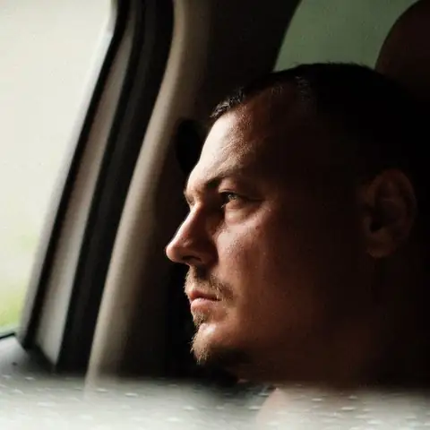
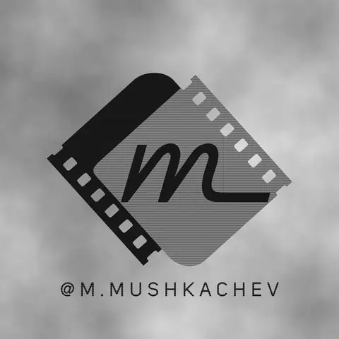

Обсуждаем
Что снимаем, где, когда и какой ролик хотите получить. Согласовываем объём и стоимость.
Я Михаил Мушкачев. Снимаю события, работаю с блогерами и бизнесом. Сам веду съёмку, монтирую и довожу видео до готового результата.

Я Михаил Мушкачев. Сам приезжаю на площадку, снимаю, отбираю материал, монтирую и работаю с цветом. Вы сразу знаете, кто отвечает за ваше видео.
Снимаю события и истории для бизнеса, работаю с блогерами и постановочными командами. Помогу разобраться с форматом и подскажу, как лучше построить кадр.

На обложках — кадры из публичных видео Михаила. Выберите работу, чтобы посмотреть её здесь или открыть оригинал в Telegram.
Проект для SEBERO · участие в съёмке и производстве видео
Съёмка для автора контента
Монтаж кампейн-ролика
От камерного мероприятия до постановочного ролика. Объём работы и результат обсуждаем заранее.
Конференции, выступления, корпоративы, выпускные и памятные события.
Скетчи, YouTube, короткие вертикальные видео и съёмки для авторов.
Покажем продукт, пространство или историю компании через видео.
Уже есть съёмка? Соберу готовый ролик из вашего материала.
«Важен не список техники.
Важен момент, который останется.»
Что снимаем, где, когда и какой ролик хотите получить. Согласовываем объём и стоимость.
Приезжаю со своей техникой, выбираю ракурсы и записываю материал. Особенности площадки учитываем заранее.
Отбираю кадры, собираю историю, работаю со звуком и цветом. Сроки и правки закрепляем в договорённости.
Вы получаете готовое видео в согласованном формате. Дополнительные версии — по отдельной договорённости.
Подключаюсь к съёмкам как оператор со своим комплектом оборудования. Работаю с постановочными сценами, блогерским контентом и последующим монтажом. Омск — база, выездные проекты обсуждаются отдельно.
Обсудить совместную съёмку ↗Конкретная конфигурация, способы записи и возможность одновременной работы камер зависят от задачи и условий площадки.
Не обязательно знать профессиональные термины. Несколько ответов — и у меня уже будет представление о задаче.
Скопируйте текст и отправьте его Михаилу. Вы сможете изменить детали в Telegram.